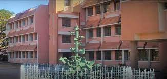

M.S Dhoni
About him
Mahendra Singh Dhoni is an Indian professional cricketer, who plays as a wicket-keeper-batsman. Widely regarded as one of the world's greatest wicketkeeper batsmen and captains in the history of the sport,[2][3] he is known for his explosive batting, wicket-keeping and leadership skills.[4] He was the captain of the Indian national team in limited-overs formats from 2007 to 2017 and in Test cricket from 2008 to 2014. He plays for and do captaincy of Chennai Super Kings franchise in the Indian Premier League (IPL).
Education

Doctor of Philosphy
J V M, MECON Colony, Shyamali Colony, Doranda, Ranchi, Jharkhand 834002
DAV Jawahar Vidya Mandir

Doctor of Philosophy
Indian Institute of Technology, Bhubaneswar, Odisha
Department